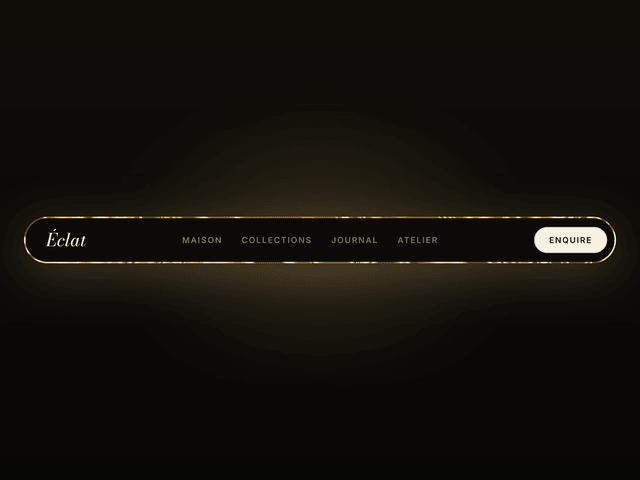
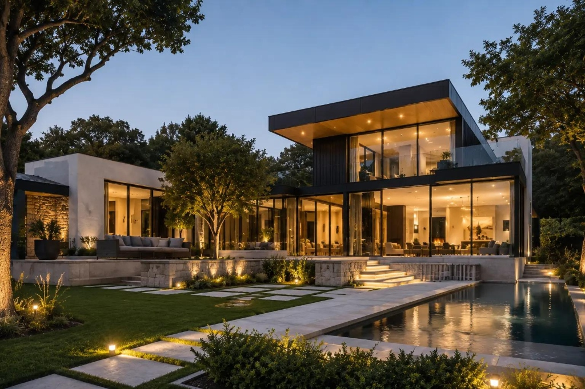
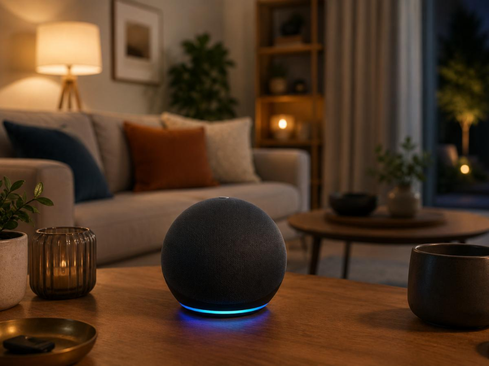
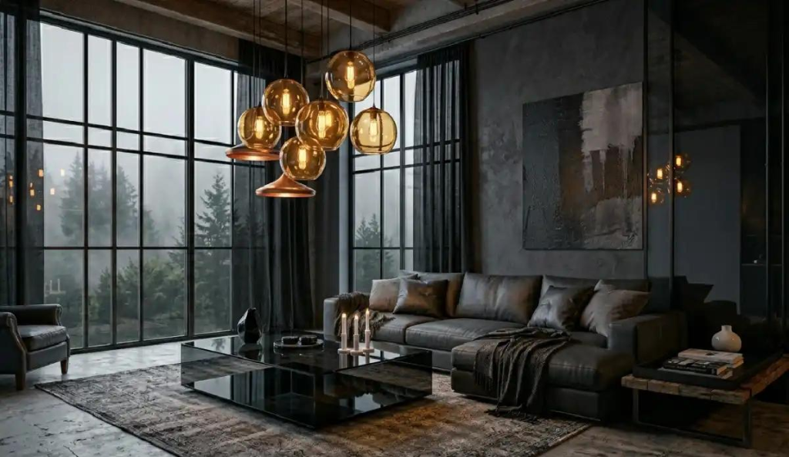

Screenshot review of the current home page. The biggest problem is not the feature design itself — it is the way the page has been sized, positioned, and how its background layers have been applied.
Analysis complete — awaiting additional reference images before fixes beginAll pasted reference images are stored in the project image/ folder:
image/bg-gradient.png
image/nav-reference.png
image/hero-house.jpg
image/speaker.png
image/living-room.pngThe screenshot has six major problems:
| Problem | What I see in the screenshot | What should happen |
|---|---|---|
| Content width | Main content is only around 700 px wide | Expand to approximately 1200–1280 px |
| Background | Large empty navy areas and horizontal colour bands | One continuous dark background |
| Hero | Photograph and text have an abrupt separation | Photograph should blend naturally into the background |
| Typography | Feature text is too small | Increase headings and paragraph sizes |
| Feature images | Images are very dark and interfaces are tiny | Brighter images and larger interface components |
| CTA | Footer CTA is too short and narrow | Wider, taller, properly balanced CTA |
The screenshot is approximately 1308 px wide. Current approximate measurements:
Empty left area | Content | Empty right area
305px | 700px | 305pxApproximate visual measurements, not inspected CSS values.
The main content occupies only about 54% of the available screen width. In the desired design, cards extend almost from the left edge to the right edge, leaving only a small margin.
Most likely a narrow wrapper or an insufficient maximum width, e.g.:
.container {
max-width: 700px;
margin: auto;
}Another possibility is a parent element with a percentage width or a scaling rule. The screenshot cannot identify the exact CSS responsible — inspect the actual container width, parent styles, grid, and any transform: scale() or zoom rules.
Use a shared container for the header, hero content and features:
.container {
width: min(1280px, calc(100% - 40px));
margin-inline: auto;
}At the current screenshot width, this gives approximately 1268 px of content rather than 700 px. This one correction will make the entire page look substantially more like the intended design.
The original Kova reference had a continuous dark navy background with small blue and purple lighting effects. The current page has a different appearance — three noticeable problems:
The left side is mostly flat navy. Feature cards are concentrated in the middle, so the empty area becomes visually dominant. Primarily a layout-width issue, but the background also needs more depth.
These areas look like independent section backgrounds rather than one continuous page.
The large purple-blue area on the right side competes with the content. Purple should support the premium appearance, not become a large rectangular background that dominates the design.
Use one global background across the complete page. Secondary colours appear as soft gradients, not solid blocks:
The colour should transition naturally from one area to another.
:root {
--bg-primary: #050918;
--bg-secondary: #0B1230;
--bg-blue: #17275B;
--text-primary: #F7F8FF;
--text-secondary: #C6CAD8;
--gold: #FFB51F;
--amber: #FFC54A;
--electric-blue: #347EFF;
--cyan: #40C7FF;
--purple: #8069DE;
--green: #00D69A;
}
html,
body {
min-height: 100%;
margin: 0;
background: #050918;
color: var(--text-primary);
}
body {
position: relative;
isolation: isolate;
background:
radial-gradient(
ellipse 48% 32% at 85% 15%,
rgba(40, 74, 165, 0.20),
transparent 75%
),
radial-gradient(
ellipse 45% 30% at 90% 70%,
rgba(92, 67, 168, 0.12),
transparent 75%
),
radial-gradient(
ellipse 40% 25% at 10% 90%,
rgba(31, 68, 149, 0.16),
transparent 75%
),
linear-gradient(
180deg,
#050918 0%,
#080F24 55%,
#050918 100%
);
}
main,
section {
background-color: transparent;
}This creates depth without creating separate horizontal colour blocks.
The header should use the same main container as the rest of the page.
Use one horizontal layout:
Kova | Home Features Explore Why Kova Resources | Get Started →| Element | Desktop size |
|---|---|
| Header height | 72–84 px |
| Logo | 100–115 px wide |
| Navigation | 420–480 px wide |
| CTA height | 42–48 px |
| Container | 1280 px maximum |
The navigation should have a transparent dark background and subtle white border. Keep the active page highlighted using a soft navy-gold effect.
The hero photograph occupies the right side, while the left side is almost completely empty except for the text. The problem is not using a split hero — a split hero is appropriate for Kova. The problem is the abrupt transition between the dark text area and the photograph. There is a visible vertical edge where the house image begins, making the photograph look like a separate rectangle pasted onto a dark background.
Use the house photograph as a full-bleed hero background. Keep the building positioned on the right. Create a dark gradient that fades gradually towards the left. The text remains in a separate content container above the image.
.hero {
position: relative;
min-height: 410px;
overflow: hidden;
isolation: isolate;
}
.hero::before {
content: "";
position: absolute;
inset: 0;
z-index: -1;
background:
linear-gradient(
90deg,
#050918 0%,
rgba(5, 9, 24, 0.96) 25%,
rgba(5, 9, 24, 0.68) 44%,
rgba(5, 9, 24, 0.18) 70%,
rgba(5, 9, 24, 0.05) 100%
),
url("/assets/kova/hero-smart-home.webp");
background-size: cover;
background-position: center right;
}The current headline is too small relative to the available space. Use:
| Element | Current appearance | Target |
|---|---|---|
| Main heading | Compressed | 56–62 px |
| Supporting text | Very small | 15–16 px |
| Small badge | Tiny | 12–13 px |
| Video button | Tiny | 44–50 px height |
Keep the hero text approximately 430–470 px wide. The house photograph should be large enough to show the full architecture, not just a small cropped area.
One of the most important sections — it demonstrates what makes Kova useful.
All the right ideas are present — a person entering the home, an inactive phone screen, a Live Demo panel, a Simulate Person Entering button. However, the entire interface is too small. The visitor cannot easily understand the sequence of events. The phone display also needs to look more like a smartphone, rather than a small floating rectangular screen.
Use a full-width card approximately 230–250 px high on desktop, divided into three visual areas:
| Area | Width | Content |
|---|---|---|
| Left | 25–30% | Heading, description and button |
| Centre | 40–45% | Person entering the room |
| Right | 25–30% | Phone and Live Demo interface |
When the visitor clicks Simulate Person Entering:
Show the phone inside a recognizable portrait-shaped smartphone frame. Do not make the phone UI too small.
The volume controller is positioned on the right, but the image and control panel are squeezed into a narrow card. The slider, percentage and controls are difficult to read.
This is a half-width card in the two-column grid. At a 1280 px container width, each half-width card has approximately 630 px available, depending on the grid gap.
Make the speaker image prominent. Place the volume controller in a glass panel showing:
VOLUME — 70%
- Blue speaker icon.
- Large 70% label.
- Horizontal slider.
- Minus button.
- Plus button.
- Animated sound-wave visual.The slider must be a real input, not a drawing. When the slider changes, update the percentage and animate the sound-wave display.
The screenshot shows Day, Evening and Night controls, which is correct. But the actual home-scene change is not sufficiently communicated.
Use the photograph as the card background. Display the three mode controls as large, clear buttons on the right. When a mode is selected:
The entire room scene should respond to the selection. A small gold border around the selected button is not enough — the background light treatment should visibly change too. For best results, use three optimized photographs or a consistent photograph with carefully controlled lighting overlays.
The camera interface is difficult to distinguish from the background. The camera preview, notification and detection controls are too small — particularly important because the image should communicate that Kova can monitor the home and alert the homeowner.
Initial state: No activity detected.
When the visitor selects Simulate Door Activity:
Keep this interface visibly separate from the photograph using a glass panel.
The current family profile section has a very dark background and the three profile images are too small. The member selector should be the primary visual element.
Increase the profile area. Use circular avatars around 60–70 px on desktop, with:
The Add Member button should be visually separate from the existing profiles. When someone selects a profile, display the permissions panel:
Use a readable glass background panel rather than a heavily darkened photograph.
Content exists and was correctly restored, but it needs substantially more visual space.
The energy graph and thermostat are compressed into the right side. The visual content should represent monitoring and control — at the moment the graph looks more like a tiny decoration than a dashboard.
Use a full-width card with approximately 230 px height, divided into three areas:
| Area | Width |
|---|---|
| Text | 30% |
| Thermostat | 20% |
| Energy dashboard | 50% |
The energy dashboard should prominently show:
ENERGY USAGE
2.4 kWh
↓ 18% vs yesterday
Indoor 22°C
Air quality GoodThe thermostat should be larger and should actually respond when the visitor changes temperature.
The footer CTA is currently squeezed into the same narrow layout as the feature cards. The logo, heading, description and button have insufficient breathing room.
Use a CTA panel approximately 960–1050 px wide, 110–125 px high. Inside:
Use a dark translucent navy background and a subtle gold border. The gold and blue flowing light trails should sit behind the panel, near the bottom of the page.
A common image-treatment issue across the current cards:
.feature-card {
position: relative;
overflow: hidden;
background-size: cover;
background-position: center;
border-radius: 24px;
}
.feature-card::before {
content: "";
position: absolute;
inset: 0;
background: linear-gradient(
90deg,
rgba(5, 9, 24, 0.94) 0%,
rgba(5, 9, 24, 0.80) 30%,
rgba(5, 9, 24, 0.38) 65%,
rgba(5, 9, 24, 0.15) 100%
);
pointer-events: none;
}
.feature-card > * {
position: relative;
z-index: 1;
}The left side stays dark enough for text. The centre remains visible. The right side shows the photograph and demonstration.
opacity: 0.5 to the entire card — that would also make text, buttons and UI controls transparent.Recommended desktop proportions to replace the current compressed layout:
| Element | Recommended desktop sizing |
|---|---|
| Main page width | 1280 px maximum |
| Outer gutter | 20–40 px |
| Header height | 72–84 px |
| Hero height | 400–440 px |
| First feature card | 230–250 px |
| Half-width feature cards | 210–230 px |
| Energy full-width card | 220–240 px |
| Card gaps | 14–18 px |
| Card border radius | 24–28 px |
| CTA width | 960–1050 px |
| CTA height | 110–125 px |
.features-grid {
width: min(1280px, calc(100% - 40px));
margin-inline: auto;
display: grid;
grid-template-columns: repeat(2, minmax(0, 1fr));
gap: 16px;
}
.feature-card:first-child,
.feature-card:last-child {
grid-column: 1 / -1;
}
.feature-card:first-child {
min-height: 240px;
}
.feature-card:not(:first-child):not(:last-child) {
min-height: 220px;
}
.feature-card:last-child {
min-height: 230px;
}
@media (max-width: 700px) {
.features-grid {
grid-template-columns: 1fr;
width: calc(100% - 32px);
}
.feature-card:first-child,
.feature-card:last-child {
grid-column: auto;
}
}On mobile, stack text and controls vertically. Never let the phone interface, controls or text overlap.
Important so the next iteration does not repeat the same problems:
| Mistake | Likely cause | Required correction |
|---|---|---|
| Narrow page | Container has a 700 px maximum width | Increase shared max width to 1280 px |
| Blank side areas | Cards are not using the available viewport width | Use a full-width main container |
| Horizontal background bands | Separate section backgrounds or wrapper backgrounds | Use one global background canvas |
| Purple area too large | A large gradient or decorative element positioned incorrectly | Use small radial gradients |
| Hero image has hard edge | Image is in a separate block without a fade | Use a full-bleed background and layered gradient |
| Small text | Typography scaled down with the narrow design | Specify desktop font sizes explicitly |
| Very dark feature images | Too much background overlay | Reduce overlay opacity toward the right |
| Small demo controls | UI panels squeezed into narrow cards | Increase card dimensions and interface area |
| Small CTA | Footer uses the same narrow container | Give CTA its own larger width |
| Poor mobile behaviour risk | Fixed dimensions and untested layout changes | Use responsive breakpoints and flexible grid sizing |
Kova Home · Features · Explore · Get Started
POWERFUL. LOCAL. YOURS.
Take Control.
Live Smarter.
[Premium house photograph across the hero, fading into navy behind the text]
01 — FULL WIDTH
Smart Presence & Automations
Large visual of person entering the house, with a realistic
phone notification and live activity panel.
02 03
Device Control Switch Modes
Large volume slider Day, Evening and Night.
and speaker.
04 05
Security Family & Access
Camera interface and Family profile and
security notifications. permission interface.
06 — FULL WIDTH
Energy, Climate & Sensors
Large thermostat, energy chart and sensor dashboard
with interactive controls.
Ready to experience Kova?
A wider CTA with the gold Kova logo and Get Started button.
Get Started Free →Structural layout illustration, not a screenshot or final visual mockup.
Do not make random visual adjustments. Fix in this order.
This is a correction of an existing design, not a request to create another layout.
Fix the existing Kova landing page based on the supplied screenshot. Do not redesign the website from scratch or remove any of its six feature sections.
The current implementation has a major content-width problem. Its main container is approximately 700 px wide on a 1308 px screen, creating enormous empty margins. Expand the main page container to a maximum width of approximately 1280 px and use consistent alignment across the header, hero and feature grid.
The global background is also incorrect. Replace the disconnected horizontal background colour bands with one continuous midnight-navy background. Use
#050918as the foundation,#0B1230for subtle depth, restrained blue radial gradients and small purple atmospheric glows. Do not use large purple rectangles or different solid backgrounds for individual page sections.Make the hero photograph full-width and blend it into the dark background with a smooth left-to-right gradient. Remove the abrupt vertical edge between the house photograph and the text area.
Increase the heading, paragraph and interface sizes. The feature photographs must be visible rather than hidden behind excessive dark overlays. Use a darker gradient behind the text on the left and more transparency toward the right.
Keep the exact six-feature order and existing feature content. Improve the dimensions of the interactive interfaces: the arrival notification and phone, volume slider, mode selector, security camera, family profiles, thermostat and energy graph.
Make the first feature demonstration clearly show an initial idle state and a triggered arrival event. Ensure that all the controls are functional.
Make the footer CTA wider and taller. Keep the gold and blue light trails subtle and balanced.
First inspect the current HTML, components and CSS. Identify the rules causing the narrow page width, background bands and scaling problems. Correct those causes instead of adding more CSS overrides on top of broken styles.
Preserve responsive behaviour and test the final result at desktop, tablet and mobile sizes.
Fix the page width and global background before touching individual cards — those two corrections will solve a significant portion of the visual problems immediately. Then improve the hero blending and card visibility. The existing six-feature concept is good; it needs to be presented at the correct scale with a consistent background system.